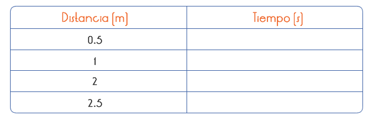

A pesar de haberse equivocado en sus conclusiones, no podemos culpar a Aristóteles por argumentar que sus ideas eran correctas. A quien podríamos criticar sería a toda la gente que durante siglos creyó ciegamente en sus conclusiones (sólo por ser un gran pensador) y nunca intentó lo que hizo Galileo: probar sus propias teorías.
Comprobar las observaciones hechas por Galileo.
1. Utiliza el riel, y acomódalo de forma inclinada, procura que la posición de inclinación se pueda variar a 30, 40 y 65° respecto a la horizontal, y por el que pueda rodar el balín.
2. Gradúen el plano inclinado con ayuda de la cinta métrica.
3. Considera cuatro puntos de medición, dividiendo la distancia del plano. Dichos puntos pueden estar situados a: 0.5m, 1m, 2m, y 2.5m (si se tiene un plano más largo o más corto, defina los puntos de la medición partiendo en tres la medida original del plano.) .
4. Desde el punto más alto del plano inclinado (que será el origen), alguien dejará rodar libremente el balín.
5. Cada uno de los integrantes del equipo deberán tener un cronómetro y se colocarán en cada una de las marcas y medirán el tiempo que tarda el balín desde que arranca hasta el momento en que cruza por su línea.
6. Haz por lo menos 3 lanzamientos.
7. Con los datos recabados, obtén un promedio de las mediciones y llena una tabla como la siguiente para cada lanzamiento.

8.Grafiquen los datos representado en el eje horizontal (tiempo) y en el vertical (distancia). ¿Qué observaron? ¿se trata de un movimiento uniforme?.
9. Repitan la experiencia para dos lados, con diferentes inclinaciones del plano. Al comparar las tres graficas que observaron.